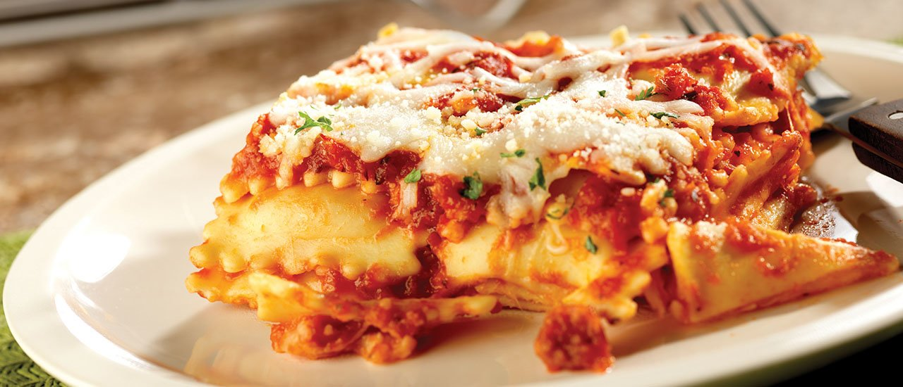

Ravioli Lasagna

Ingredients
- 1 pound of ground beef
- 1 jar of spaghetti sauce
- 1 package of cheese ravioli
- 1.5 cups of cheese.
Directions
- In large pan cook beef over medium heat until no longer pink
- Grease a baking dish
- Layer a third of the spaghetti sauce, half the ravioli and beef, and half cup of cheese
- Repeat layers
- Bake at 400 degrees for 45 minutes
Contact Me
Ashley's E-mail
The University of Montana
32 Campus Dr
Missoula, MT 59812
Original Recipe